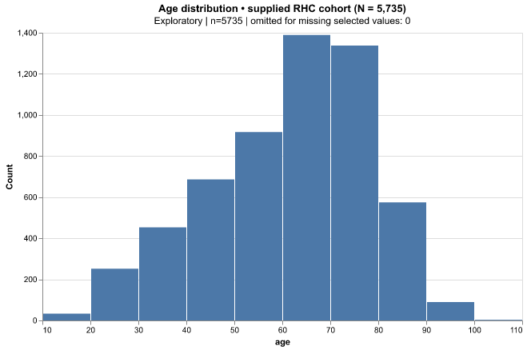

RIGHT-HEART CATHETERIZATION · MATCHED AGENT PILOT · SEPTEMBER 2026
What did the new workflow actually add?
Two fresh agents received the same 5,735-patient dataset, research request and model. One used the original statistical skills; the other added an executable controller, project memory and MCP. Each then resumed in a fresh session for the same sensitivity question.
This is one pilot, not a causal experiment proving component benefits. Jev was excluded. Both analyses remain exploratory and do not establish that RHC causes harm.
Similar scientific and visual qualityIndependent review: baseline 81.7/100; upgraded 83.3/100. A small subjective score difference is not evidence of superiority. Both produced five useful analytical figures.
Read the independent review More explicit provenance and recorded stopsThe upgraded run used actual MCP import, profiling, literature retrieval and chart rendering. It persisted and retrieved four scoped decisions. These additions have overhead; token savings must be measured.
Actual MCP calls ·
Workflow evidence Explore both reports
The full reports contain effect estimates, uncertainty methods, limitations and interactive views. Figures below can be opened at full resolution.
Original-skills report →Upgraded report →Baseline follow-up report → Upgraded follow-up report → Trade-offs: the baseline flagged 11 no-death records with last contact before day 30. The upgraded report added balance checks for missingness indicators and source provenance. Neither removes the need for scientific review.
Measured model usage
Input counts include repeated context across calls; cached input is a subset, not an extra charge. Uncached input is input minus cached input. Output includes reasoning tokens where reported; do not add reasoning again. These are host telemetry counts, not billed dollar amounts.
Observed result: the upgraded workflow used 48.3% more uncached input and 29.3% more output across both phases. No token savings were demonstrated.
Both configurations could reuse ordinary saved files; the baseline was not forced to replay a conversation. Differences include tool-schema/API-learning overhead and stochastic agent choices, so this cannot isolate memory's effect.
Interpretation and limitations · Machine-readable telemetryWhat MCP contributed to visualization
The extra age histogram below was rendered by the MCP server from its checksummed data/profile artifacts. The five main statistical figures were generated with scientific Python in both configurations. A gallery connection is useful infrastructure, but it does not automatically produce better statistical figures.

Public RHC data courtesy Vanderbilt Biostatistics. Source details and checksums are recorded in the study protocol. Frozen initial artifacts were checked for preservation after follow-up.